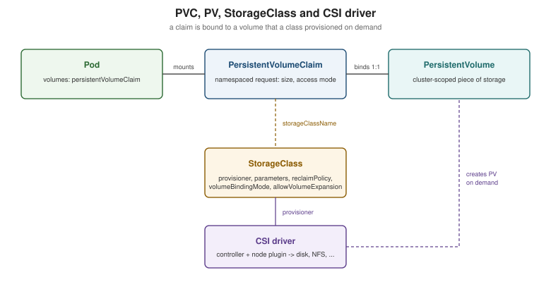

Persistent Volumes and Storage Classes
|
This content was generated with the assistance of AI and should be verified against the official documentation before being relied on in production. |
Data that must outlive a Pod — a database, an upload directory — needs storage whose lifecycle is independent of any Pod. Kubernetes splits that into three objects: a PersistentVolume (PV) is a piece of storage in the cluster, a PersistentVolumeClaim (PVC) is a user’s request for it, and a StorageClass describes a kind of storage that can be provisioned on demand. Developers ask for "5 GiB, read-write" without knowing whether it is an NFS export, a cloud disk or a local directory. This page is written against Kubernetes 1.37; see the section index for the version baseline. It follows Volumes and Ephemeral Storage and underpins StatefulSets and Stateful Applications in Practice.

PVs and PVCs: binding
A PV is cluster-scoped; a PVC is namespaced and is what a Pod’s persistentVolumeClaim volume references. The
control plane binds each PVC to exactly one PV whose capacity, access modes, volume mode and StorageClass satisfy it
(one-to-one, even if the PV is larger). A PVC with no suitable PV stays Pending. Pods referencing a PVC are not
scheduled until it is bound.
apiVersion: v1
kind: PersistentVolumeClaim
metadata:
name: catalog-data
namespace: bookshelf
spec:
accessModes:
- ReadWriteOnce
storageClassName: standard
resources:
requests:
storage: 5Gi
---
apiVersion: v1
kind: Pod
metadata:
name: catalog-api
namespace: bookshelf
spec:
containers:
- name: catalog-api
image: ghcr.io/example/bookshelf-catalog-api:1.0.0
volumeMounts:
- name: data
mountPath: /var/lib/catalog
volumes:
- name: data
persistentVolumeClaim:
claimName: catalog-dataSource: Kubernetes Docs — Persistent Volumes.
Access modes
| Mode | Meaning |
|---|---|
|
Read-write by Pods on a single node (several Pods on that node may share it). |
|
Read-only by many nodes. |
|
Read-write by many nodes; needs a file-system backend such as NFS, CephFS or a cloud file share. |
|
Read-write by a single Pod in the whole cluster (CSI only); stable since 1.29. Use for strict single-writer data. |
Volume modes and reclaim policies
volumeMode: Filesystem (default) mounts a formatted file system; Block hands the container a raw block device, for
databases that manage their own layout. When a claim is deleted, the PV’s persistentVolumeReclaimPolicy decides what
happens to the data: Delete removes the PV and the backing storage (the default for dynamically provisioned volumes),
Retain keeps the volume and its data for manual recovery, after which an administrator must clean it and clear its
claimRef before reuse. Protect important data by setting Retain on the StorageClass or patching the PV:
kubectl patch pv <pv-name> -p '{"spec":{"persistentVolumeReclaimPolicy":"Retain"}}'
kubectl get pv,pvc -ASource: Kubernetes Docs — Reclaiming.
StorageClasses and dynamic provisioning
Static provisioning (an administrator pre-creates PVs) does not scale. A StorageClass names a provisioner and its
parameters, so a PVC that references the class gets a PV created on demand: dynamic provisioning.
apiVersion: storage.k8s.io/v1
kind: StorageClass
metadata:
name: fast-ssd
annotations:
storageclass.kubernetes.io/is-default-class: "false"
provisioner: csi.example.com # a CSI driver name
parameters:
type: ssd
reclaimPolicy: Retain
volumeBindingMode: WaitForFirstConsumer
allowVolumeExpansion: trueSource: Kubernetes Docs — Storage Classes.
-
Default class: a PVC that omits
storageClassNamegets the class annotatedis-default-class: "true". SettingstorageClassName: ""explicitly means "no class: bind only to a PV without one". -
volumeBindingMode: WaitForFirstConsumer: delay provisioning until a Pod using the claim is scheduled, so the volume is created in the zone/node where the Pod will actually run.Immediate(the default) provisions at claim creation and can strand a Pod whose zone has no capacity or whose topology constraints clash. -
allowVolumeExpansion: true: lets users grow a PVC by editingspec.resources.requests.storage; shrinking is not supported. The file system is expanded online when the driver supports it. -
reclaimPolicyis copied to the PVs the class creates.
On kind
A kind cluster ships the Rancher local-path provisioner and a default StorageClass named standard, so a PVC works
out of the box without any setup; the volume is a directory on the node container, which is perfect for learning and
useless for node failure.
kubectl get storageclass
kubectl apply -f catalog-data-pvc.yaml
kubectl get pvc -n bookshelf # Pending until a Pod uses it (WaitForFirstConsumer)NAME PROVISIONER RECLAIMPOLICY VOLUMEBINDINGMODE ALLOWVOLUMEEXPANSION
standard (default) rancher.io/local-path Delete WaitForFirstConsumer falseSource: kind docs and local-path provisioner. Output abbreviated.
Where the books are outdated
Book 2 (the 2017 sampler) requests a default class through a beta annotation
(volume.beta.kubernetes.io/storage-class) and gives PVs and PVCs annotation-based class names, and its chapter on
StorageClasses uses in-tree provisioners. The annotation was replaced by the spec.storageClassName field (and
storage.k8s.io/v1 for StorageClass); the default-class annotation is now
storageclass.kubernetes.io/is-default-class; and in-tree provisioners have given way to CSI drivers.
The CSI architecture
The Container Storage Interface is a standard gRPC API between orchestrators and storage vendors, which moved all
volume code out of the Kubernetes tree. A CSI driver is deployed as workloads: a controller Deployment (create/delete,
snapshot, expand; with external-provisioner, -attacher, -snapshotter and -resizer sidecars) and a node DaemonSet
(stage/publish volumes on each node, registered with the kubelet) — see DaemonSets.
The StorageClass’s provisioner names the driver.
The earlier in-tree types the two books list (awsElasticBlockStore, gcePersistentDisk, azureDisk, cinder, and
others) were migrated: API objects keep working, but the in-tree code redirects to the matching CSI driver, and the
plugins have since been removed from recent releases. Install the provider’s CSI driver (most managed clusters do this
for you; see Managed Kubernetes and Distributions).
Snapshots, cloning and populators
With a CSI driver that supports them, VolumeSnapshot objects (CRDs, with VolumeSnapshotClass, installed separately
from the snapshot controller) capture a point in time of a PVC; a new PVC can then be restored from it through
dataSource. Cloning uses a PVC as the dataSource of another. Volume populators (dataSourceRef, stable in 1.33)
generalize this to any custom resource that fills a new volume.
apiVersion: snapshot.storage.k8s.io/v1
kind: VolumeSnapshot
metadata:
name: catalog-data-snap
namespace: bookshelf
spec:
volumeSnapshotClassName: csi-snapclass
source:
persistentVolumeClaimName: catalog-data
---
apiVersion: v1
kind: PersistentVolumeClaim
metadata:
name: catalog-data-restored
namespace: bookshelf
spec:
storageClassName: fast-ssd
dataSource:
apiGroup: snapshot.storage.k8s.io
kind: VolumeSnapshot
name: catalog-data-snap
accessModes: ["ReadWriteOnce"]
resources:
requests:
storage: 5GiSource: Kubernetes Docs — Volume Snapshots.
VolumeAttributesClass and storage capacity
A VolumeAttributesClass (stable in 1.34) holds mutable driver parameters such as IOPS or throughput. Changing a PVC’s
volumeAttributesClassName modifies the volume in place, without re-creating it, which a StorageClass cannot do.
apiVersion: storage.k8s.io/v1
kind: VolumeAttributesClass
metadata:
name: gold
driverName: csi.example.com
parameters:
iops: "6000"Storage capacity tracking (CSIStorageCapacity objects published by drivers) lets the scheduler avoid nodes that
cannot fit a WaitForFirstConsumer claim, preventing Pods from landing where provisioning then fails.
Reliable singleton: MySQL, rebuilt
Book 2’s "reliable singleton" runs MySQL as a single replica, stores its data on an NFS PersistentVolume created by
hand, binds it with a claim, adds a liveness probe and fronts it with a Service. The idea — one Pod, durable data,
stable name — is sound, and the current version replaces the hand-built NFS PV and claim with a StorageClass and a
one-replica StatefulSet whose volumeClaimTemplates provision the claim (data-mysql-0) on demand. The StatefulSet
also gives the Pod a stable name (mysql-0) and never starts a replacement until the old Pod is gone, so two MySQL
Pods never mount the same RWO volume.
apiVersion: v1
kind: Service
metadata:
name: mysql
namespace: bookshelf
spec:
clusterIP: None
selector:
app: mysql
ports:
- port: 3306
---
apiVersion: apps/v1
kind: StatefulSet
metadata:
name: mysql
namespace: bookshelf
spec:
serviceName: mysql
replicas: 1
selector:
matchLabels:
app: mysql
template:
metadata:
labels:
app: mysql
spec:
containers:
- name: mysql
image: mysql:9
env:
- name: MYSQL_ROOT_PASSWORD
valueFrom:
secretKeyRef:
name: mysql-root
key: MYSQL_ROOT_PASSWORD
livenessProbe:
exec:
command: ["mysqladmin", "ping"]
initialDelaySeconds: 30
volumeMounts:
- name: data
mountPath: /var/lib/mysql
volumeClaimTemplates:
- metadata:
name: data
spec:
accessModes: ["ReadWriteOnce"]
storageClassName: standard
resources:
requests:
storage: 10GiSource: Kubernetes Docs — StatefulSets
and Deploying WordPress and MySQL with Persistent Volumes.
WordPress-specific storage (a persistent volume for uploads) is covered in
Containers, Docker and Kubernetes. The Secret mysql-root is created as in Secrets. Clients connect to
mysql.bookshelf (or mysql-0.mysql.bookshelf). The upstream
Run a Single-Instance Stateful Application
task shows the alternative: a standalone PVC plus a one-replica Deployment with strategy: Recreate. It works, but the
claim has to be managed by hand and the Pod name changes on every restart. Scaling beyond one instance is covered in
StatefulSets.
Practical guidance
-
Delete a PVC only when you mean to lose the data; with
reclaimPolicy: Deleteit is gone. CheckpersistentVolumeClaimRetentionPolicyon StatefulSets for what happens when they scale down or are deleted. -
A PVC stuck in
Terminatingis protected by thekubernetes.io/pvc-protectionfinalizer while a Pod still uses it. -
RWO volumes are zonal in most clouds: a rescheduled Pod must land in the same zone, which is why
WaitForFirstConsumerand topology-aware scheduling matter (Scheduling and Disruptions). -
Back up with snapshots and an off-cluster copy; a snapshot in the same storage system is not a backup.